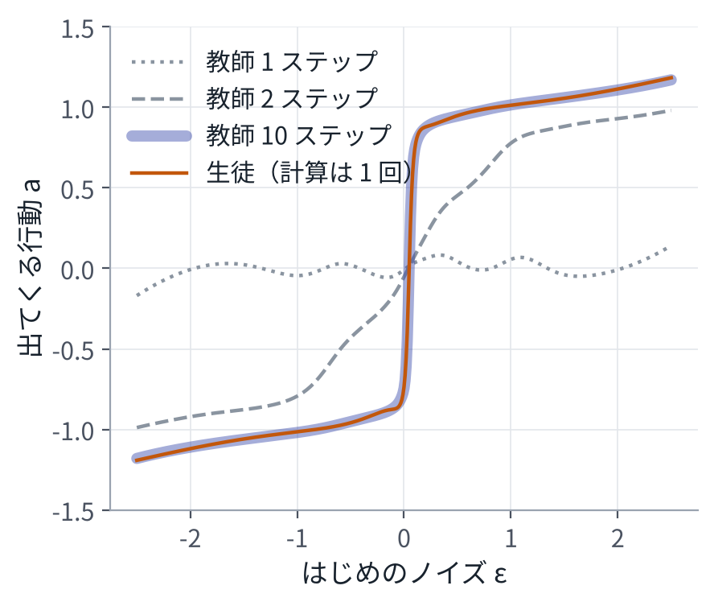

目次
1一般の形
\[ \min_\phi\ \mathbb{E}_{x\sim\rho}\Big[ D\big(f_{\text{教}}(x),\ f_{\text{生}}(x;\phi)\big) \Big] \]決めることは 3 つある。
- 教師の何を目標にするか（\(f_{\text{教}}\)）。出力の確率分布、出力そのもの、途中の特徴。
- どの入力の上で合わせるか（\(\rho\)）。これが意外に効く。
- ずれをどう測るか（\(D\)）。二乗誤差、KL（2 章）など。
教師は、入力を与えればいくらでも答えを出せる。人のお手本と違って、目標が大量に、ばらつきなく手に入る。これが蒸留の強みである。
| 何をするか | 教師 | 生徒 | 合わせるもの | 得るもの |
|---|---|---|---|---|
| 小さくする（知識蒸留） | 大きいモデル | 小さいモデル | 出力の確率分布、途中の特徴 | メモリと計算時間 |
| ステップを減らす | 多くのステップで解くフローや拡散 | 1 回から数回で出すモデル | ノイズから行動への写像、または行動の分布 | 計算の回数（10 回が 1 回に） |
| 方策をまとめる（方策蒸留） | シミュレータの中の情報を使う方策、強化学習の方策、複数の専門の方策 | 実機の観測だけで動く 1 つの方策 | 行動 | 実機で動くこと、1 つにまとまること |
2小さくする：知識蒸留
分類の例で書く。ロジットを \(z\) とし、温度 \(T\) の softmax（2 章）を \(p^{(T)}_i = e^{z_i/T} / \sum_j e^{z_j/T}\) と書く。生徒の損失は、正解 \(y\) に対する交差エントロピーと、教師の分布に対する KL の和である[1]。
\[ \begin{aligned} L(\phi) ={}& (1-\alpha)\,\mathrm{CE}\big(y,\ p_{\text{生}}\big) \\ &+ \alpha\, T^2\, \mathrm{KL}\big(p^{(T)}_{\text{教}} \,\big\|\, p^{(T)}_{\text{生}}\big) \end{aligned} \]教師の出力は、正解のクラスだけでなく、「どのクラスとどのクラスが似ているか」も含んでいる。温度を上げると、正解でないクラスの確率の差が見えるようになる。演習 10 の (5) では、教師のロジット \(z = (4, 2, 0)\) が、温度 1 で (0.867, 0.117, 0.016)、温度 4 で (0.506, 0.307, 0.186) になる。2 番目のクラスが 3 番目より正解に近い、という情報が、温度を上げると生徒に伝わりやすくなる。係数 \(T^2\) は、温度を変えても勾配の大きさがそろうようにするためのもので、温度を十分に高くすると、この損失は教師と生徒のロジットの二乗誤差に近づく[1]。
3ステップを減らす
10 章のフローの推論は、ノイズ \(\varepsilon\) を行動 \(A\) に写す、決まった写像と見なせる。教師の速度場を \(N\) ステップで積分した結果を \(\Phi_N(\varepsilon, c)\) と書く。いちばん素直な蒸留は、これを 1 回の計算で出す生徒 \(g_\phi\) を、回帰で学習することである。
\[ \min_\phi\ \mathbb{E}_{\varepsilon,\,c}\ \big\| g_\phi(\varepsilon, c) - \Phi_N(\varepsilon, c) \big\|^2 \]演習 10 の (4) は、これを 1 次元の問題で行う。お手本のデータは使わず、ノイズを入れたときの教師（10 ステップ）の出力だけを目標にする。

| 方法 | 山に入った割合 | 計算 |
|---|---|---|
| 教師 10 ステップ | 96.5% | 10 回 |
| 教師 1 ステップ | 0.0% | 1 回 |
| 蒸留した生徒 | 96.2% | 1 回 |
教師を 1 ステップで使うと 0% なのに、同じ「計算 1 回」の生徒が 96.2% になるのはなぜか。教師のネットが覚えているのは速度場で、それは積分して初めて行動になる（1 ステップでは平均に落ちる、10 章）。生徒が覚えているのは、積分し終えた結果である。蒸留は、推論のたびにやっていた計算を、学習の段階に前倒ししたことになる。
実際の方法
実際に使われる方法は、この素直な回帰を工夫したものである。
- 段階的蒸留。教師の 2 ステップ分を生徒の 1 ステップに合わせ、ステップ数を半分にすることを繰り返す[2]。
- 一貫性モデル。「同じ軌道の上の点は、どこから始めても同じ終点に着く」という条件を生徒に課す[3]。ロボットでは、Consistency Policy が Diffusion Policy を蒸留して、推論を 1 桁速くした[4]。
- 分布を合わせる。写像ではなく、生徒が出す行動の分布を、教師の分布に合わせる。One-Step Diffusion Policy は、1 回の計算で行動を出す[5]。
軌道を合わせる方法は複数の山を平均しやすく、分布を合わせる方法は 1 つの山に寄りやすい、という指摘がある[6]。10 章の例で言えば、前者は正面へ進む行動が混ざる危険、後者は左右の片方しか選ばなくなる危険である。2 章の KL の向き（\(\mathrm{KL}(p\|q)\) と \(\mathrm{KL}(q\|p)\)）の違いが、ここで効いてくる。
2026 年には、フローで行動を出す方策を 1 ステップにする方法が続けて出ている。SnapFlow は、フロー型の VLA（π0、π0.5、SmolVLA）の 10 ステップを 1 ステップにまとめる[7]。One-Step Flow Policy も、1 ステップで行動を出す方策を作る[6]。どちらも、別の教師を用意せず、モデルが自分自身を教師にする形（自己蒸留）を取る。
4方策をまとめる：方策蒸留
教師 \(\pi_{\text{教}}(a \mid s)\) は、シミュレータの中でしか分からない真の状態 \(s\)（物体の正確な位置、摩擦など）を見て動く。強化学習や最適化で、比較的簡単に作れる。生徒 \(\pi_{\text{生}}(a \mid o)\) は、実機で手に入る観測 \(o\)（カメラ画像、関節の角度）だけを見る。
\[ \min_\phi\ \mathbb{E}_{s\sim d_{\text{生}}}\Big[ D\big(\pi_{\text{教}}(\cdot \mid s),\ \pi_{\text{生}}(\cdot \mid o(s);\phi)\big) \Big] \]\(d_{\text{生}}\) は、生徒が自分で動いたときに訪れる状態の分布である。ここが要点になる。教師が訪れた状態の上だけで合わせると、生徒は、少し外れたときの戻り方を教わらない。9 章の行動クローニングの弱点そのものである。生徒に動かせ、訪れた状態に教師の答えを付け直す。これは 9 章の DAgger で、教え手が人ではなくシミュレータの中の教師になったものである[8]。演習 9 の「表」の方策が、DAgger で失敗しなくなったのと同じ理屈が働く。
- Learning by Cheating は自動運転の研究で、真の状態を見る教師を先に学習し、それを画像だけで動く生徒に写した[9]。
- HOVER は、ヒューマノイドの全身制御で、真の状態を使う教師から、いくつもの指令の形を受けられる 1 つの方策を、DAgger で蒸留した[10]。ヒューマノイドでは、この 2 段構えが広く使われている。
- RLDG は、強化学習で作った専門の方策にデータを作らせ、それで汎用の方策（VLA）を学習し直す[11]。
MPC を教師にする。MPC や MPPI の制御器は、毎回の最適化で入力を出す教師になれる。生徒は、観測から 1 回の計算で入力を出すネットである。生徒が訪れた状態に MPC の答えを付け直す形（DAgger）にすれば、方策蒸留の 3 つの部品（教師、生徒、合わせる場所）を、自分の制御器で体験できる。実行時の重い最適化を、学習の段階に前倒しすることになる。
5蒸留でないもの、蒸留の限界
量子化（重みを少ないビットで表す）、枝刈り、LoRA は、同じモデルを軽くしたり、一部だけ学習したりする方法である。教師と生徒という関係はない。蒸留と組み合わせて使うことはある。
蒸留には限界もある。
- 生徒は、教師の誤りもそのまま写す。教師より良くなることは、基本的にない。
- どの入力の上で合わせるか（\(\rho\)）を誤ると、合わせたはずの生徒が、実際に使う場面で教師とずれる。
- 生徒が小さすぎると、教師の写像を表しきれない。演習 10 の写像は段の形をしていて、生徒の MLP は、その段を 1 回の計算で作らなければならない。
6その先
模倣学習も蒸留も、お手本や教師を超えにくい。その先にあるのは、強化学習で仕上げる方向である。π*0.6 は、行動の良し悪しを表す値（アドバンテージ）を条件として入力に足し、実機で集めた経験と、人による訂正から学習し直す[12]。この資料の道具（条件付きの分布、フロー、教師と生徒）が、そのまま使われている。
7演習
演習 10 の (4)(5)10 ステップの教師を、1 回で出す生徒に写す
python3 vla_math/ch10_flow_distill.py出力の一部：
(4) 蒸留: 10 ステップの教師 → 1 回で出す生徒（3000 回の更新）
損失: はじめの 100 回の平均 0.0580 → 終わりの 100 回の平均 0.000126
教師 10 ステップ（計算 10 回）: 山に入った割合 96.5%
教師 1 ステップ（計算 1 回）: 山に入った割合 0.0%
生徒 （計算 1 回）: 山に入った割合 96.2%
生徒と教師の出力のずれ（二乗平均の平方根）: 0.011
左右の割合（生徒）: 左 51.9%、右 48.0%
(5) 知識蒸留の温度: 教師のロジット z = (4, 2, 0) を、温度 T の softmax に通す
T = 1: p = (0.867, 0.117, 0.016)
T = 4: p = (0.506, 0.307, 0.186)
見るところ：蒸留の損失は 0 近くまで下がる。10 章のフローの損失と違い、教師の出力は 1 つに決まっていて、目標にばらつきがないからである。生徒は、左右の割合も教師（お手本）とほぼ同じに保っている。
変えてみる：
- 教師のステップ数を 100 にする。生徒が写しやすくなるか、写しにくくなるかを見る。
- 生徒のネットを小さくする（
distillの中のMLP([1, 64, 64, 1], rng)）。どこまで小さくできるかを見る。 - 生徒を「2 ステップで出す」形にする。段階的蒸留の 1 回分にあたる。
8まとめ
- 蒸留は、教師の出力を目標にした学習である。決めることは、何を合わせるか、どの入力の上で合わせるか、ずれをどう測るか。
- ロボットでは 3 つの意味がある。小さくする、ステップを減らす、方策をまとめる。
- ステップを減らす蒸留は、推論のたびの積分を、学習の段階に前倒しする。同じ計算 1 回でも、教師の 1 ステップと、蒸留した生徒はまるで違う。
- 方策蒸留では、生徒が訪れた状態の上で合わせる（DAgger）。9 章の弱点への対策と同じ理屈である。
9確かめる問題
- 3 つの蒸留それぞれについて、教師、生徒、合わせるもの、合わせる入力の分布を答えよ。
- 教師を 1 ステップで使うより、蒸留した 1 ステップの生徒のほうが良い行動を出せるのはなぜか。
- 蒸留の損失は 0 近くまで下がるのに、10 章のフローの損失は下がりきらないのはなぜか。
- 方策蒸留で、教師が訪れた状態だけで合わせると何が起こるか。
- 蒸留と量子化の違いを述べよ。
10読むもの
※参考文献
- G. Hinton, O. Vinyals and J. Dean, "Distilling the Knowledge in a Neural Network," 2015. arXiv:1503.02531
- T. Salimans and J. Ho, "Progressive Distillation for Fast Sampling of Diffusion Models," 2022. arXiv:2202.00512
- Y. Song, P. Dhariwal, M. Chen and I. Sutskever, "Consistency Models," 2023. arXiv:2303.01469
- A. Prasad et al., "Consistency Policy: Accelerated Visuomotor Policies via Consistency Distillation," 2024. arXiv:2405.07503
- Z. Wang et al., "One-Step Diffusion Policy: Fast Visuomotor Policies via Diffusion Distillation," 2024. arXiv:2410.21257
- S. Li et al., "One-Step Flow Policy: Self-Distillation for Fast Visuomotor Policies," 2026. arXiv:2603.12480
- "SnapFlow: One-Step Action Generation for Flow-Matching VLAs via Progressive Self-Distillation," 2026. arXiv:2604.05656
- S. Ross, G. J. Gordon and J. A. Bagnell, "A Reduction of Imitation Learning and Structured Prediction to No-Regret Online Learning," 2011. arXiv:1011.0686
- D. Chen, B. Zhou, V. Koltun and P. Krähenbühl, "Learning by Cheating," 2019. arXiv:1912.12294
- T. He et al., "HOVER: Versatile Neural Whole-Body Controller for Humanoid Robots," 2024. arXiv:2410.21229
- C. Xu, Q. Li, J. Luo and S. Levine, "RLDG: Robotic Generalist Policy Distillation via Reinforcement Learning," 2024. arXiv:2412.09858
- Physical Intelligence, "π*0.6: a VLA That Learns From Experience," 2025. arXiv:2511.14759
- C. Pan, Z. Yi, G. Shi and G. Qu, "Model-Based Diffusion for Trajectory Optimization," 2024. arXiv:2407.01573